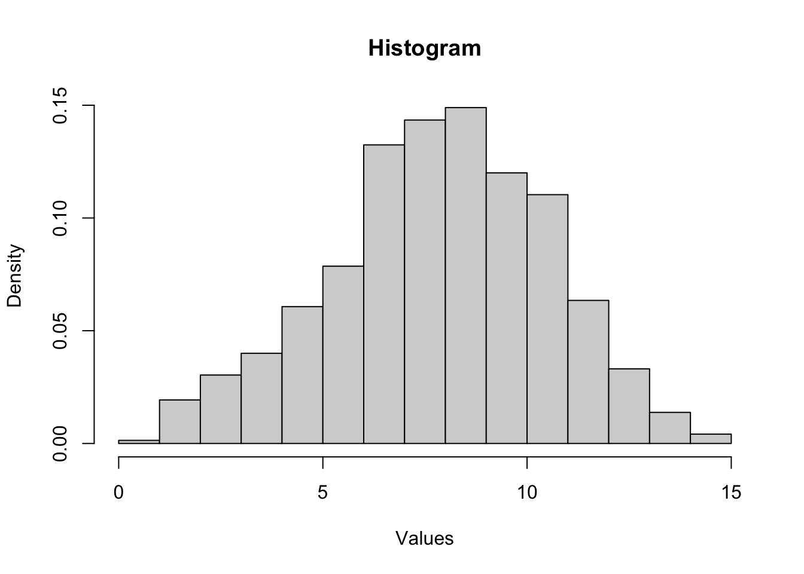
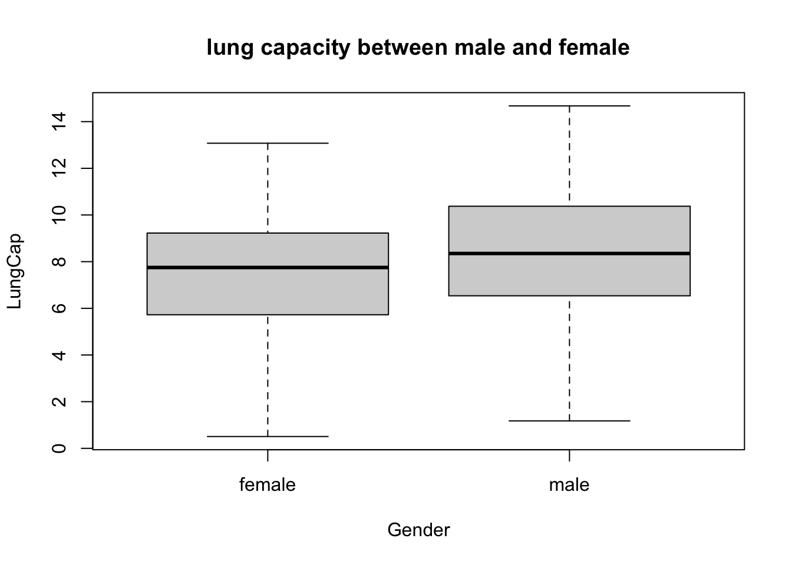
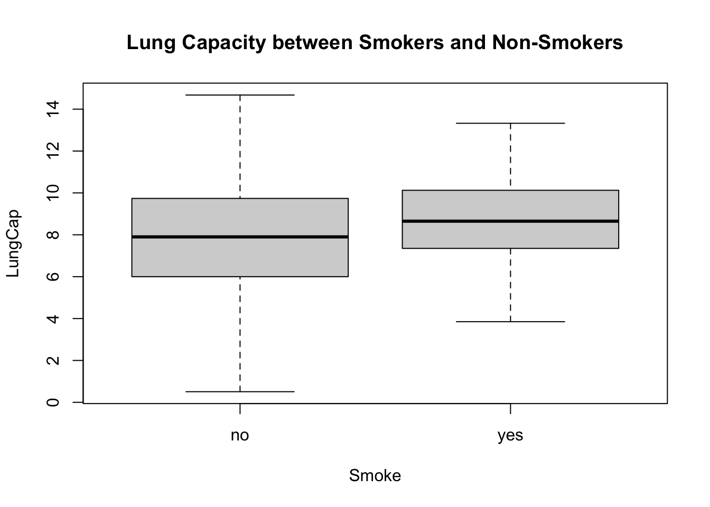

hist(lung_data$LungCap, freq =FALSE, main ="Histogram", xlab ="Values", ylab ="Density")

B:
Code
boxplot(LungCap ~ Gender, data = lung_data)title("lung capacity between male and female")

C:
Code
boxplot(LungCap ~ Smoke, data = lung_data)title("Lung Capacity between Smokers and Non-Smokers")

D:
Code
lung2 <-lung %>%mutate(Age_Cat =case_when( Age >=0& Age <=13~"13 or less", Age >=14& Age <=15~"14 to 15" , Age >=16& Age <=17~"16 to 17" , Age >=18~"18 or more" , ))
Error in mutate(., Age_Cat = case_when(Age >= 0 & Age <= 13 ~ "13 or less", : object 'lung' not found
Error in eval(expr, envir, enclos): object 'box_plot_crop2' not found
E: Smoking has been found to have a negative correlation with lung capacity in three out of four groups studied. However, it is possible that another explanation exists. Older individuals tend to smoke more and also have higher lung capacity, so analyzing the relationship between smoking and lung capacity without factoring in age can lead to a misinterpretation of the true association.
Error in paste("the standad deviation:", standad_deviation): object 'standad_deviation' not found
Source Code
---title: "Homework1"author: "Sai Padma pothula"desription: ""date: "05/02/2023"format: html: toc: true code-fold: true code-copy: true code-tools: truecategories: - Homework1 - sai Pothula---This is an [R Markdown](http://rmarkdown.rstudio.com) Notebook. When you execute code within the notebook, the results appear beneath the code. Try executing this chunk by clicking the *Run* button within the chunk or by placing your cursor inside it and pressing *Cmd+Shift+Enter*. ```{r}library(readxl)library(dplyr)library(tidyverse)library(ggplot2) lung_data <-read_excel("_data/LungCapData.xls")view(lung_data)```1A:```{r}hist(lung_data$LungCap, freq =FALSE, main ="Histogram", xlab ="Values", ylab ="Density")```B:```{r}boxplot(LungCap ~ Gender, data = lung_data)title("lung capacity between male and female")```C:```{r}boxplot(LungCap ~ Smoke, data = lung_data)title("Lung Capacity between Smokers and Non-Smokers")```D:```{r}lung2 <-lung %>%mutate(Age_Cat =case_when( Age >=0& Age <=13~"13 or less", Age >=14& Age <=15~"14 to 15" , Age >=16& Age <=17~"16 to 17" , Age >=18~"18 or more" , ))box_plot_crop2<-ggplot(data=lung2, aes(x=Smoke, y=LungCap, fill=Smoke)) box_plot_crop2+geom_boxplot() +theme(legend.position ="right") +theme (axis.text.x=element_blank(),axis.ticks.x=element_blank())+coord_cartesian(ylim =c(0, 15))+labs(title="Box Plot - Lung Capacity",x ="Smoke", y ="Density")+facet_wrap(.~Age_Cat, scales="free")```E:Smoking has been found to have a negative correlation with lung capacity in three out of four groups studied. However, it is possible that another explanation exists. Older individuals tend to smoke more and also have higher lung capacity, so analyzing the relationship between smoking and lung capacity without factoring in age can lead to a misinterpretation of the true association. 2A:```{r}X <-c(0, 1, 2, 3, 4)frequency <-c(128, 434, 160, 64, 24)``````{r}prob_two <- frequency[3] /sum(frequency)print(paste("the probability:", prob_two))```2B```{r}prob_two <- (frequency[1]+frequency[2]) /810print(paste("the probability:", prob_two))```2C:```{r}prob_two <- (frequency[1]+frequency[2]+frequency[3]) /810print(paste("the probability:", prob_two))```2D:```{r}prob_two <- (frequency[4]+frequency[5]) /810print(paste("the probability:", prob_two))```2E:```{r}probaility_fre<-c(128/810, 434/810, 160/810, 64/801, 24/810)weigh_avg<-weighted.mean(X, probaility_fre)print(paste("the expected value:", weigh_avg))```2F:```{r}weigh_avgvariance <-sum((X-weigh_avg)^2*probaility_fre)print(paste("the variance:", weigh_avgvariance))``````{r}standad_deviation <-sqrt(variance)print(paste("the standad deviation:", standad_deviation))```